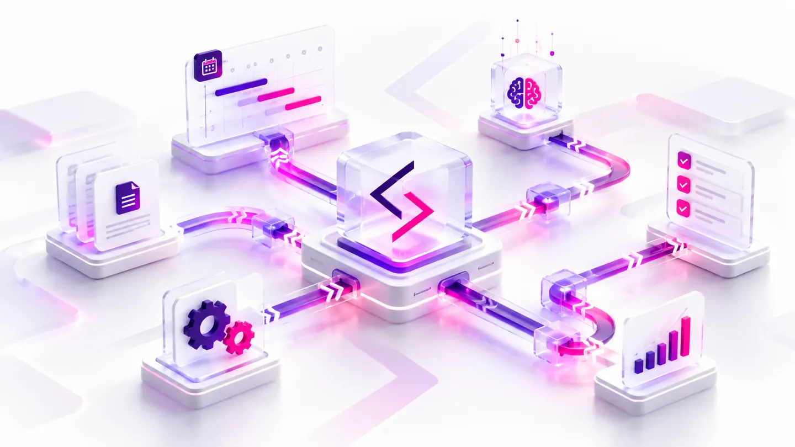

From broadcasting and live streaming to AI, enterprise software and network infrastructure—Simulcast designs, integrates and supports technology in Nepal and beyond.
We connect people, platforms, equipment and expertise—from initial planning through installation, training and ongoing support.
Meet Simulcast ↗From broadcast playout and streaming media pipelines to newsroom systems, telecom OSS/BSS, business software and AI-assisted workflows.
Explore all software capabilities ↗Designed around practical production and business operations.
Explore capabilities ↗Designed around practical production and business operations.
Explore capabilities ↗Designed around practical production and business operations.
Explore capabilities ↗
Designed around practical production and business operations.
Explore capabilities ↗Practical architecture, integration, engineering and maintenance—from Lalitpur to distributed operations.
Talk to engineering ↗